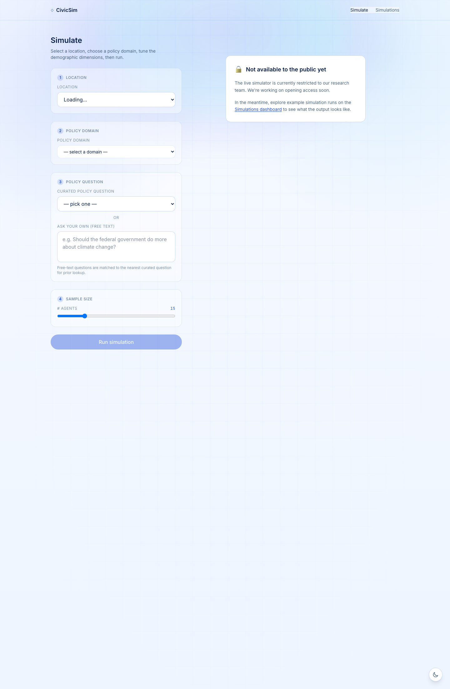
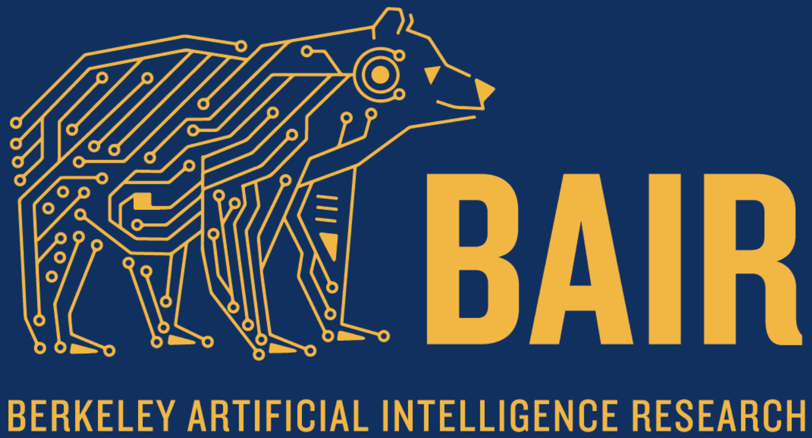

Demographically grounded LLM simulations for public-policy testing.
Synthetic personas now de-risk decisions across industries. Public policy still ships untested.
The model is not the problem. The who being simulated is.
Personas synthesized from generic priors. Civic populations are not faithfully represented at the joint level.
Designed for marketing studies and qualitative work. Not built to defend a policy choice in a hearing.
Personas and reasoning are opaque. No auditable subgroup breakdown. No inspection.
Pick a U.S. location. Choose a policy question. Run a synthetic electorate that is actually representative.
Agents sampled from ACS Census microdata. 2.5M records. Distributions match the location.
Each agent carries an empirical opinion prior from 38,449 Pew respondents. Not LLM guesswork.
Every persona inspectable. Demographics, prior, stance, rationale streamed live and saved.
A complete user journey, end to end.
What will different demographics think?

Build N agents matching the location's demographics.
Attach an empirical opinion prior to each agent.
Each agent answers with stance plus rationale.
Stream results live. Surface divergence by group.
Why: the only public source with joint demographic distributions at population scale. Marginal-only sampling collapses intersectional groups. ACS preserves them.
Why: consistent methodology across 80+ waves, broad topical coverage. Compiled into a compact opinion-prior lookup. No PII.
Census for the who. Pew for what they think. Our contribution is in how we combine them.

The transparency is the part that matters. I can defend a recommendation when I can show how the population was constructed.
Anonymous ResearcherGoldman School of Public Policy, UC Berkeley
We have been waiting for something that takes subgroup representation seriously. This is the methodological bar academic work requires.
Anonymous ResearcherPossibility Lab, UC Berkeley
The empirical variable selection result changes how I would design the next study. Not just how I would run a simulation.
Anonymous PhD CandidateStanford Institute for Human-Centered AI